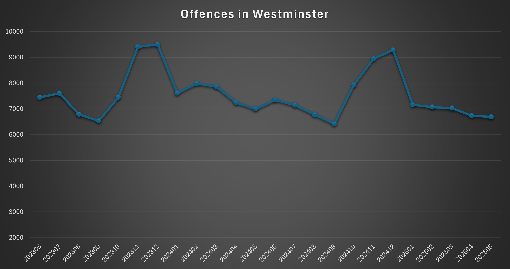

Crime Types and Rates
- Theft from the Person – Average: ~2,500/month; Peak: 4,094 (December 2024).
- Other Theft – Average: ~1,700/month; Peak: 2,572 (November 2023).
- Shoplifting – Average: ~500/month; Peak: 689 (May 2025).
- Violence Without Injury – Average: ~630/month; Peak: 776 (August 2024).
- Violence With Injury – Average: ~300/month; Peak: 383 (November 2023).
Key Trends:
- Theft (especially pickpocketing) is rampant, with peaks during tourist-heavy months.
- Shoplifting and violent crimes show consistent highs, particularly in crowded areas.
Safety Advice
- 🚶♂️⚠️ Avoid crowded tourist spots like Oxford Street at peak times – pickpockets target distracted individuals.
- 👜🔒 Use cross-body bags with zippers and keep valuables out of sight in busy areas.
- 🌙💡 Stay in well-lit areas at night, particularly around Soho and Leicester Square, where violent incidents spike.
Crime Statistics Chart

Offences in Westminster